프로젝트 관리자 기능#
프로젝트 관리자는 특정 프로젝트에 대해 관리 권한을 부여받은 사용자입니다. 프로젝트 관리자는 시스템 전체의 슈퍼 관리자 권한 없이도 자신이 관리하는 프로젝트에 속한 사용자를 확인하고, 연산 세션과 모델 배포를 관리하며, 스토리지 폴더를 운영할 수 있습니다.
프로젝트 관리자 권한 프로젝트 식별#
헤더의 프로젝트 드롭다운을 열면 프로젝트 관리자 권한을 가진 프로젝트에는 이름 옆에 방패 모양의 배지가 표시됩니다. 배지 위에 마우스를 올리면 프로젝트 관리자 툴팁이 나타나며, 해당 프로젝트를 선택하면 아래에 설명된 프로젝트 관리자용 사이드바 항목들이 표시됩니다.
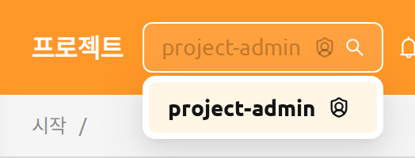
헤더의 프로젝트 선택기에서 다른 프로젝트로 전환하면 사용자의 역할이 다시 평가됩니다. 동일한 사용자가 한 로그인 세션 내에서 어떤 프로젝트에서는 프로젝트 관리자로, 다른 프로젝트에서는 일반 사용자로 동작할 수 있습니다. 프로젝트 관리자 역할을 부여하고 회수하는 방법은 RBAC 관리 장의 프로젝트 관리자 권한 부여 섹션을 참고하세요.
프로젝트 관리자 권한은 선택한 프로젝트마다 다시 평가되므로 사용할 수 있는 페이지가 프로젝트에 따라 달라질 수 있습니다. 권한이 없는 URL을 열거나 권한이 없는 프로젝트를 선택하면 허가되지 않은 접근입니다. 페이지가 표시되며, 처음 사용할 수 있는 페이지로 돌아가는 버튼이 함께 제공됩니다.
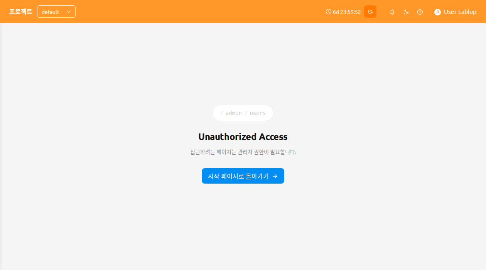
프로젝트 관리자 권한 설정#
슈퍼 관리자는 프로젝트 관리자 페이지(사용자 → 프로젝트)에서 실행되는 프로젝트 관리자 권한 설정 모달을 통해 한 곳에서 한 명 이상의 사용자에게 프로젝트 관리자 권한을 부여하고 회수할 수 있습니다.
각 프로젝트 행에서 프로젝트 관리자 권한 설정 버튼을 클릭하여 모달을 엽니다.
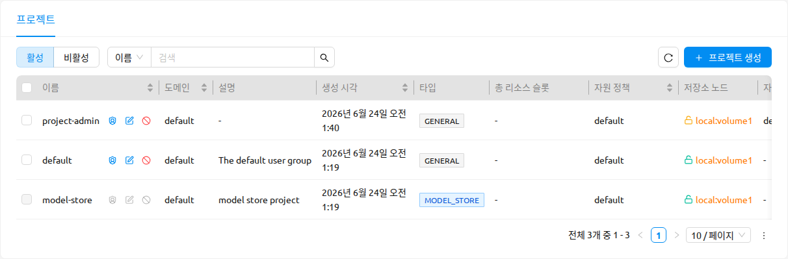
프로젝트 관리자 권한 설정 동작은 매니저 26.8.0 이상의 슈퍼 관리자에게 제공됩니다. 이전 버전의 매니저에서는 표시되지 않으며, 모델 스토어 프로젝트에서는 비활성화됩니다.
이 모달은 다음을 제공합니다:
- 사용자 선택 및 추가: 한 명 이상의 사용자를 선택하는 다중 선택기와, 현재 프로젝트에 대한 프로젝트 관리자 권한을 부여하는 추가 버튼입니다.
- 현재 관리자 테이블: 프로젝트의 현재 관리자 목록으로, 각 항목에는 해당 사용자의 프로젝트 관리자 권한을 제거하는 관리자 권한 해제(X) 동작이 있습니다.
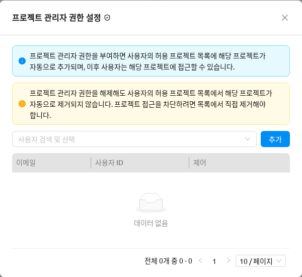
이 모달에는 할당하거나 회수하기 전에 읽어야 하는 두 개의 알림이 표시됩니다:
- 정보: 프로젝트 관리자 권한을 부여하면 사용자의 허용 프로젝트 목록에 해당 프로젝트가 자동으로 추가되어 이후 사용자가 해당 프로젝트에 접근할 수 있습니다.
- 경고: 프로젝트 관리자 권한을 해제해도 사용자의 허용 프로젝트 목록에서 해당 프로젝트가 자동으로 제거되지 않습니다. 프로젝트 접근을 차단하려면 목록에서 직접 제거해야 합니다.
모달 제목 옆의 RBAC 권한 확인 아이콘은 프로젝트의 role_project_<project_id>_admin 역할이 미리 필터링되고 상세 패널이 열린 상태로 RBAC 관리 페이지를 열어 기반 역할을 확인할 수 있게 합니다. 이 역할에 대한 자세한 내용은 RBAC 관리 장의 프로젝트 관리자 권한 부여를 참고하세요.
여러 사용자를 한 번에 추가할 때 실패한 사용자는 할당하지 못한 사용자 수를 포함한 오류 알림으로 표시되며, 성공한 사용자에게는 여전히 권한이 부여됩니다.
프로젝트 관리자 사이드바#
프로젝트 관리자 권한을 가진 프로젝트를 선택하면 사이드바의 운영 섹션에 해당 프로젝트를 관리하기 위한 네 개의 항목이 표시됩니다:
- 사용자 — 현재 프로젝트의 구성원
- 데이터 — 현재 프로젝트가 소유한 스토리지 폴더
- 세션 — 현재 프로젝트의 사용자들이 소유한 연산 세션
- 배포 — 현재 프로젝트가 소유한 모델 배포
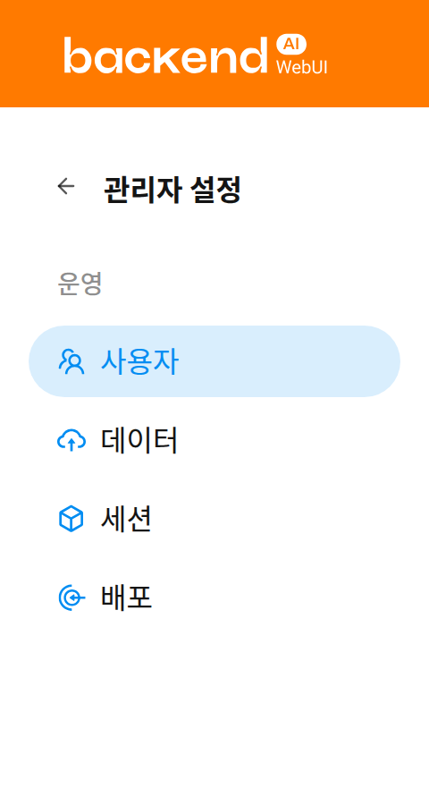
프로젝트 관리자 페이지에서는 상단의 프로젝트 선택기로 선택한 프로젝트 하위의 항목들만 표기됩니다. 이 내용은 페이지 상단의 배너를 통해 확인할 수 있습니다.
프로젝트 관리자 페이지 새로고침#
프로젝트 관리자 페이지에서는 동일한 새로고침 버튼을 제공합니다. 새로고침 버튼을 클릭하면 테이블 목록을 갱신할 수 있습니다.
새로고침 버튼 옆의 드롭다운 버튼을 클릭하면 자동 새로고침 메뉴가 열리며, 자동 새로고침 주기를 선택할 수 있습니다.
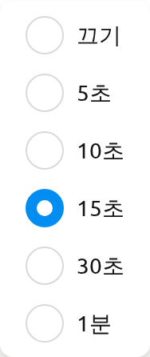
사용자#
사용자 페이지에는 현재 선택된 프로젝트에 속한 모든 사용자가 표시됩니다. 이 페이지를 사용하면 프로젝트의 멤버를 한눈에 검토할 수 있습니다. 예를 들어 프로젝트 리소스에 접근 가능한 사용자를 확인하거나 비활성 계정을 식별할 수 있습니다.
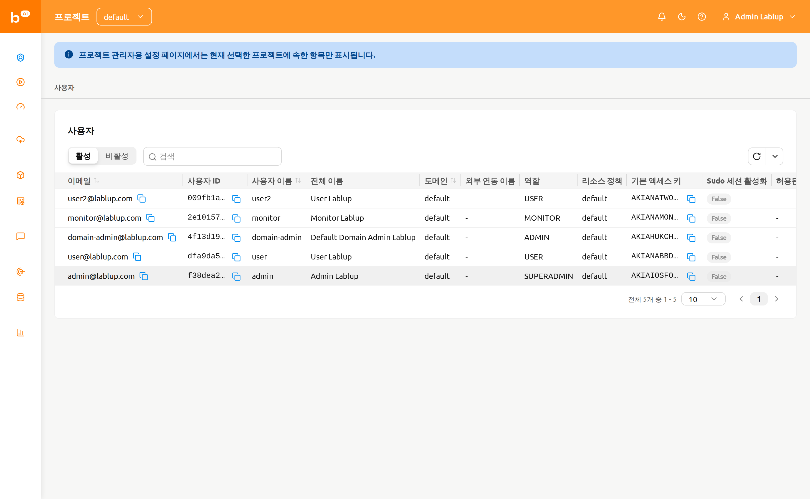
페이지는 다음 컨트롤을 제공합니다:
- 활성 / 비활성 세그먼트 컨트롤: 활성 사용자와 비활성 사용자를 전환합니다. 기본적으로 활성이 선택되어 있습니다.
- 속성 필터: E-Mail, ID, 사용자 이름, 역할 또는 생성일로 목록을 필터링합니다.
프로젝트 관리자에게 사용자 페이지는 읽기 전용입니다. 이 페이지에는 사용자 생성, 편집, 비활성화 작업이 제공되지 않으며, 해당 작업은 슈퍼 관리자만 관리자 기능 장에 설명된 시스템 전체 사용자 페이지에서 수행할 수 있습니다.
데이터#
데이터 페이지에는 현재 선택된 프로젝트가 소유한 스토리지 폴더(vfolder)가 표시됩니다. 이 페이지에서 프로젝트 공유 폴더를 생성하거나, 실수로 삭제된 폴더를 복원하거나, 더 이상 보관할 필요가 없는 폴더를 영구 삭제할 수 있습니다.
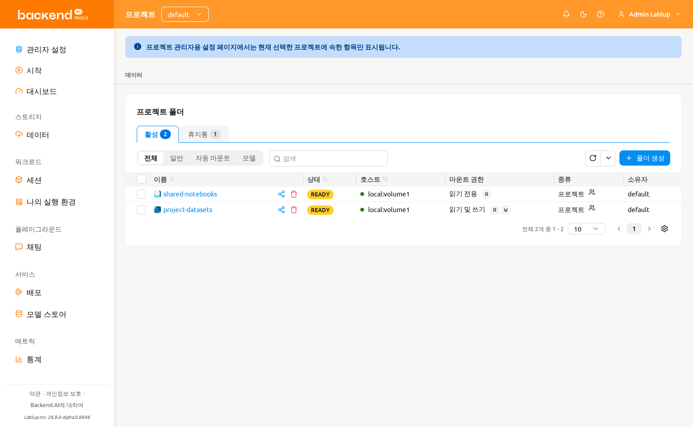
페이지는 다음 컨트롤을 제공합니다:
활성 / 휴지통 탭: 현재 활성 폴더와 소프트 삭제된 폴더 사이를 전환합니다. 각 탭에는 포함된 폴더 수를 나타내는 개수 배지가 표시됩니다.
모드 필터: 폴더 사용 모드별로 필터링합니다 — 전체, 일반, 파이프라인, 자동 마운트, 모델.
파이프라인과 모델 옵션은 배포에서 해당 기능이 활성화된 경우에만 표시됩니다 — 파이프라인은 FastTrack 파이프라인 엔드포인트, 모델은 모델 폴더가 활성화되어 있어야 합니다.
속성 필터: 표준 스토리지 폴더 속성 필터를 사용하여 목록을 필터링합니다.
폴더 생성#
이 페이지에서 새 폴더를 생성하려면:
- 페이지 오른쪽 상단의 폴더 생성 버튼을 클릭합니다.
- 생성 모달에서 폴더 정보를 입력합니다.
- 생성을 클릭하여 폴더를 생성합니다.
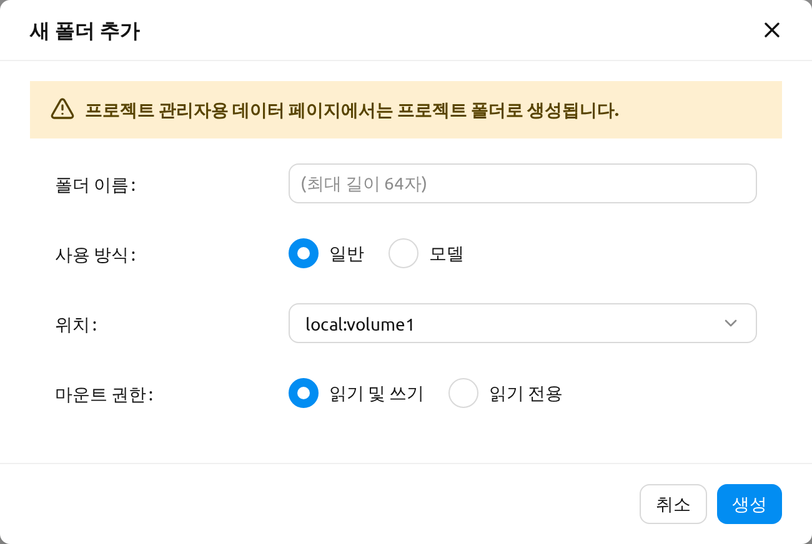
프로젝트 관리자용 데이터 페이지에서 생성한 폴더는 항상 프로젝트 폴더입니다. 생성 모달에는 폴더 유형을 선택하는 항목이 없으며, 이를 명확히 알리는 다음 메시지가 표시됩니다:
프로젝트 관리자용 데이터 페이지에서는 프로젝트 폴더로 생성됩니다.
폴더 사용 모드, 권한, 할당량에 대한 자세한 내용은 스토리지 폴더 장을 참고하세요.
폴더 복원 또는 영구 삭제#
휴지통 탭으로 전환하면 소프트 삭제된 폴더를 확인할 수 있습니다. 행 체크박스로 하나 이상의 폴더를 선택한 다음, 선택 개수 옆에 나타나는 헤더 작업 버튼을 사용합니다:
- 복구: 선택한 폴더를 활성 탭으로 되돌립니다.
- 영구 삭제: 선택한 폴더를 완전히 제거합니다. 이 작업은 되돌릴 수 없으며, 확인을 위해 폴더 이름을 직접 입력해야 합니다.
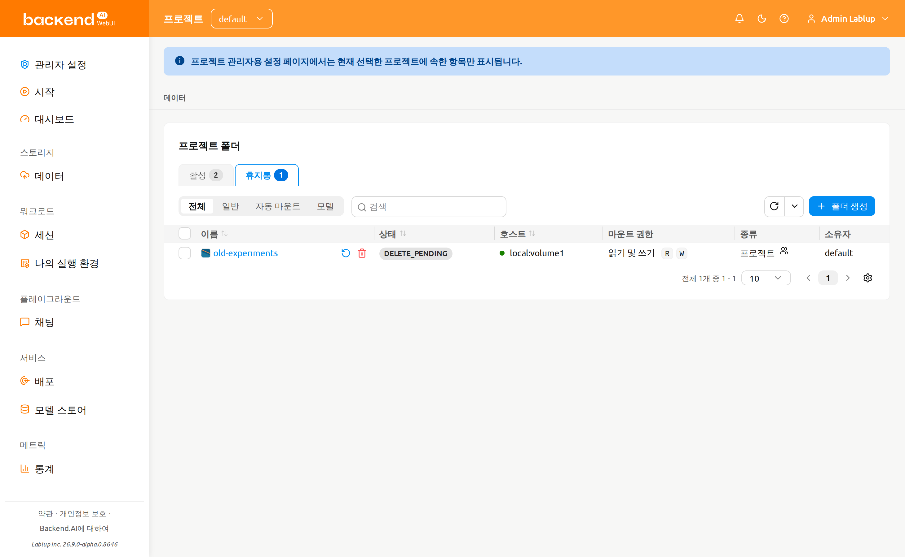
스토리지 폴더를 영구 삭제하면 모든 콘텐츠가 제거되며 되돌릴 수 없습니다. 확인 모달에서는 삭제 버튼이 활성화되기 전에 폴더 이름을 정확히 입력해야 합니다.
세션#
세션 페이지에는 현재 선택된 프로젝트의 사용자들이 소유한 연산 세션이 표시됩니다. 이 페이지에서 활성 워크로드를 모니터링하거나, 장시간 실행 중인 세션을 식별하거나, 더 이상 필요하지 않은 세션을 종료할 수 있습니다.
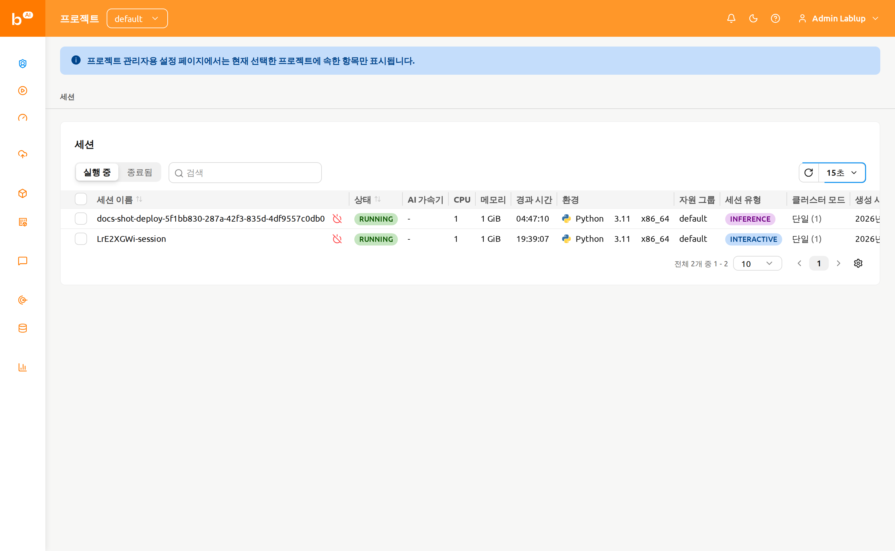
페이지는 다음 컨트롤을 제공합니다:
- 실행 중 / 종료됨 세그먼트 컨트롤: 현재 실행 중인 세션과 이미 종료된 세션을 전환합니다.
- 속성 필터 및 정렬: ID, 세션 이름 또는 소유자 UUID로 목록을 필터링할 수 있으며, 정렬 가능한 열 헤더를 클릭하여 테이블을 정렬할 수 있습니다.
세션 종료#
하나 이상의 세션을 종료하려면:
- 가장 왼쪽 열의 체크박스를 사용하여 종료할 세션을 선택합니다. 단일 세션을 종료하는 경우 세션 이름 옆의 종료 버튼을 활용할 수 있습니다.
- 테이블 헤더의 전원 끄기 아이콘을 클릭하여 확인 모달을 엽니다.
- 모달에 표시된 대상 세션 목록을 확인합니다.
- 필요한 경우 강제 종료 체크박스를 선택하여 현재 상태와 상관없이 세션을 종료하거나 취소합니다. 이 옵션을 활성화하면 경고가 표시되고 확인 버튼 레이블이 종료에서 강제 종료로 변경됩니다.
- 확인 버튼을 클릭하여 세션을 종료합니다.
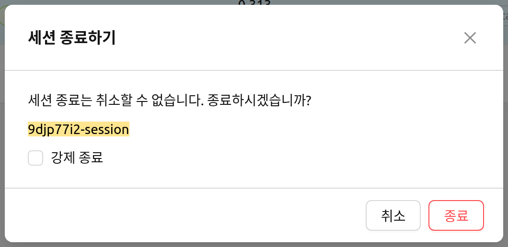
강제 종료는 세션이 멈춰 있고 비정상적으로 오랫동안 상태가 변하지 않을 때만 사용하세요. 강제 종료는 에이전트에 있는 실제 컨테이너를 삭제하지 않으므로, 이후 수동으로 컨테이너를 정리해야 할 수 있습니다.
프로젝트 관리자용 세션 페이지에서는 현재 세션 이름을 클릭해도 세션 상세 패널이 열리지 않습니다. 연산 세션과 상세 보기에 대한 배경 지식은 세션 페이지 장을 참고하세요.
배포#
배포 페이지에는 현재 선택된 프로젝트가 소유한 모델 배포가 표시됩니다. 이 페이지에서 추론 엔드포인트를 관리하거나, 배포 설정을 편집하거나, 더 이상 사용하지 않는 배포를 제거할 수 있습니다.
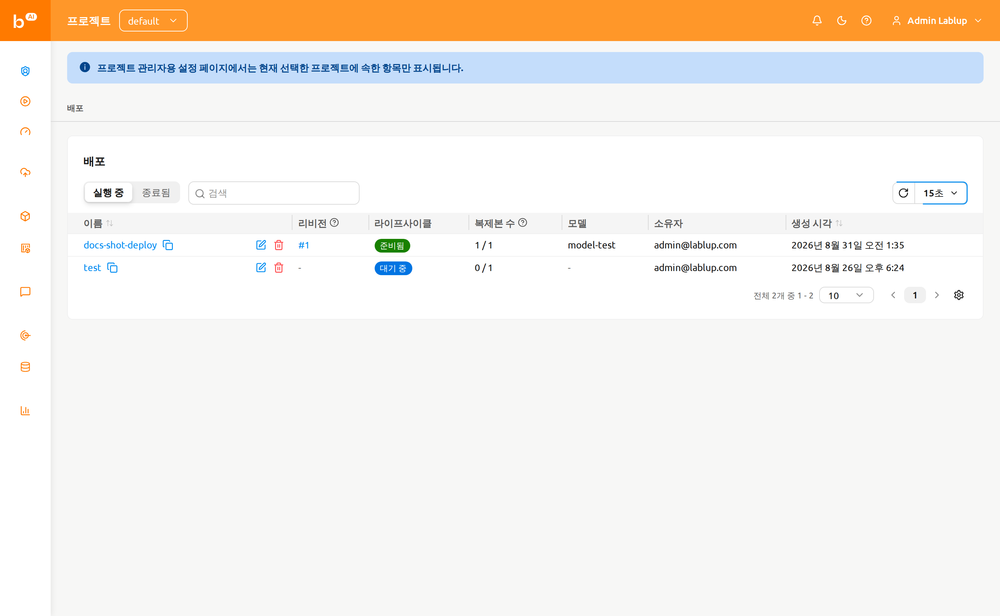
페이지는 다음 컨트롤을 제공합니다:
- 실행 중 / 종료됨 세그먼트 컨트롤: 현재 실행 중인 배포와 종료된 배포를 전환합니다.
- 속성 필터: 이름, 태그, 엔드포인트 URL 또는 공개 여부로 목록을 필터링합니다.
테이블에는 배포의 이름, 리비전, 라이프사이클, 복제본, 모델, 소유자, 생성일 열이 표시되며, 필요한 경우 도메인, 프로젝트, 자원 그룹 정보도 함께 표시됩니다.
리비전 열에는 배포의 현재 리비전이 클릭 가능한 #N 링크로 표시됩니다. 이 링크를 클릭하면 현재 리비전의 상세 정보를 보여 주는 패널이 열립니다.
배포 작업#
각 배포 행에서는 다음 작업을 사용할 수 있습니다:
- 배포 이름을 클릭하면 프로젝트 관리자 범위 내의 배포 상세 페이지로 이동합니다.
- 리비전 번호(
#N)를 클릭하면 현재 리비전의 상세 정보 패널이 열립니다. - 연필 아이콘을 클릭하면 설정 모달에서 배포 구성을 편집할 수 있습니다.
- 휴지통 아이콘을 클릭하면 배포를 삭제할 수 있습니다. 삭제를 수행하려면 확인 모달에서 배포 이름을 직접 입력해야 합니다.
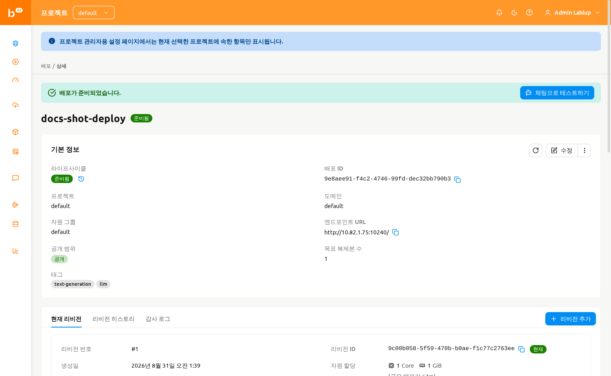
배포 리비전, 복제본, 트래픽 라우팅에 대한 자세한 내용은 배포 장을 참고하세요.